Префектура Симанэ · Идзумо, Ясуги, Мацуэ · сакэ и еда
Сакэ и говядина Симанэ: от святилища бога сакэ до ужина с видом на озеро
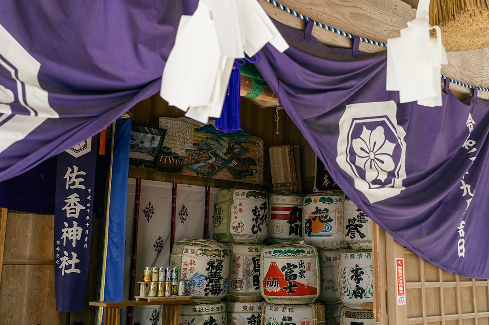
Префектура Симанэ считает себя родиной японского сакэ: об этом говорят древние мифы Идзумо. Здесь стоит святилище бога сакэ, работают около 30 пивоварен, а к их сакэ подают редкую местную говядину.
Миф
Где родилось сакэ
Префектура Симанэ лежит на севере региона Тюгоку, у Японского моря. Здесь стоит святилище Идзумо-тайся, куда едут просить удачи в любви и браке, здесь же старый серебряный рудник Ивами Гиндзан из списка Всемирного наследия и город Мацуэ на берегу озера Синдзи.
Сакэ в Симанэ варят, как считается, со времён Яёй, то есть больше двух тысяч лет. Восточную часть префектуры, Идзумо, называют родиной японского сакэ. В «Кодзики», старейшей японской летописи 712 года, есть миф о том, как бог Сусаноо одолел восьмиглавого змея Ямата-но Ороти: он напоил чудовище крепким сакэ и победил его, пока тот спал. Действие мифа происходит именно в Идзумо.
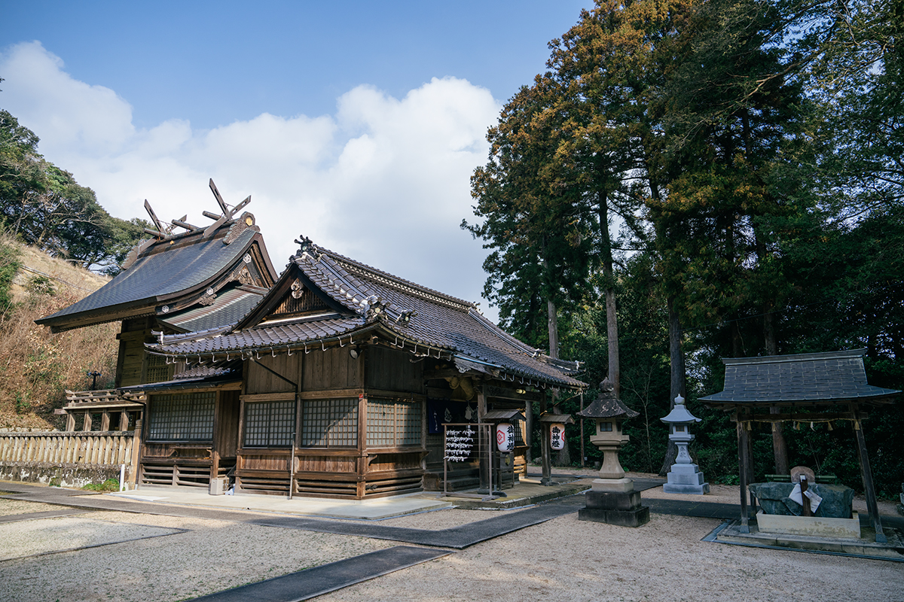
Есть и другой древний текст. В «Идзумо-но куни фудоки», описании провинции Идзумо 733 года, сказано, что в местности Сака собрались боги, сварили сакэ и пировали 180 дней. Святилище Сака, которое ещё называют святилищем Мацуо, стоит как раз там. Его главный бог, Куси-но ками, покровительствует пивоварам. Есть версия, что само слово «сакэ» пошло от названия Сака. Сюда приезжают пивовары со всего мира и просто любители выпить.
Святилище Сака (Мацуо)
- Адрес
- префектура Симанэ, Идзумо, Кодзакаи-тё, 108
Идзумо
«Фудзи сюдзо»: сакэ, сделанное руками
Пивоварня «Фудзи сюдзо» в городе Идзумо работает с 1939 года и сознательно вернулась к старым приёмам. Её марка «Идзумо Фудзи» названа так из желания сварить в Идзумо лучшее сакэ страны, которое любили бы, как любят гору Фудзи. Тодзи, главный мастер пивоварни, здесь в четвёртом поколении, и его девиз звучит так: «Варим Идзумо, стремимся к Фудзи».
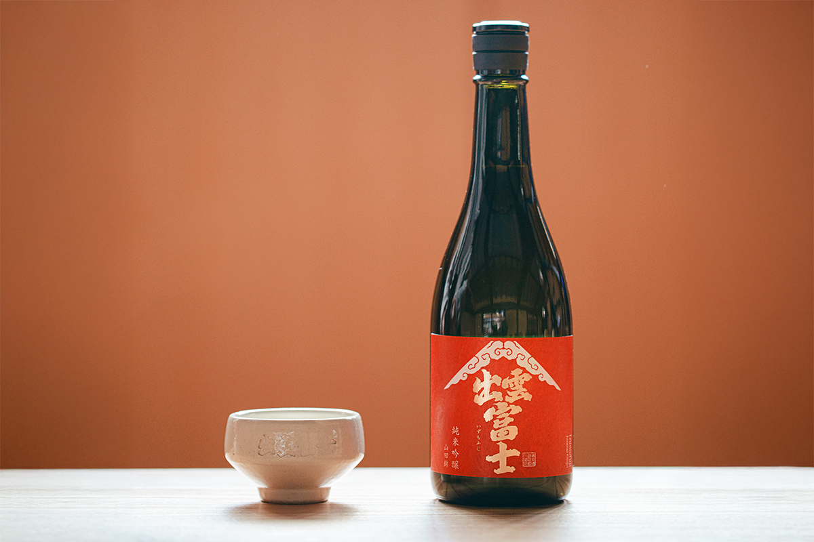
Рис сорта Сака-нисики для «Фудзи сюдзо» выращивают местные фермеры, которые берегут землю, а воду берут из подземных источников у реки Хии. Мастера во всём полагаются на свои чувства, и сакэ получается насыщенным, с явным вкусом здешней земли.
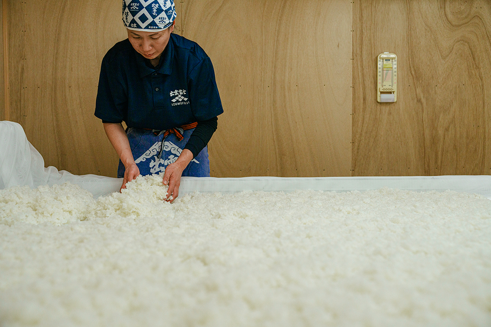
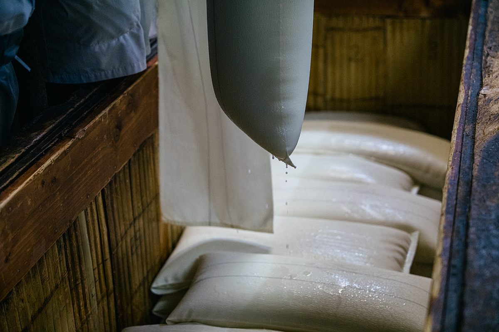
Кондиционеров на пивоварне нет. Рис моют, брагу сбраживают и сакэ отжимают в естественном климате Идзумо, и на каждом этапе всё проходит через руки мастеров. Обычно так тщательно работают только над самым дорогим сакэ, дзюммай дайгиндзё, а здесь этим способом делают весь объём. Сакэ «Фудзи сюдзо» получает высокие оценки на конкурсах в Японии и за рубежом.
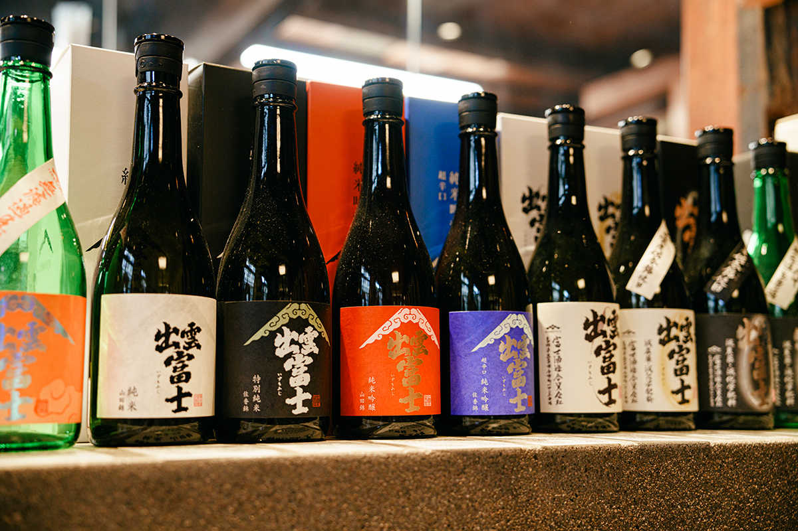
Магазинов, где продают это сакэ, немного, зато на самой пивоварне есть и постоянные марки, и сезонные выпуски.
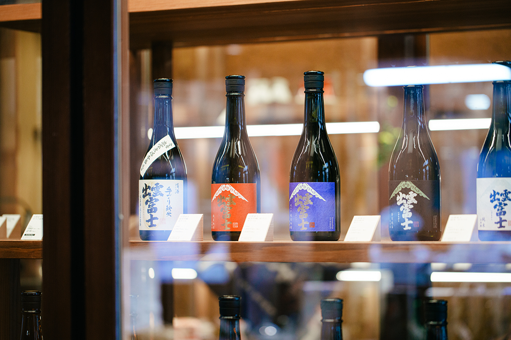
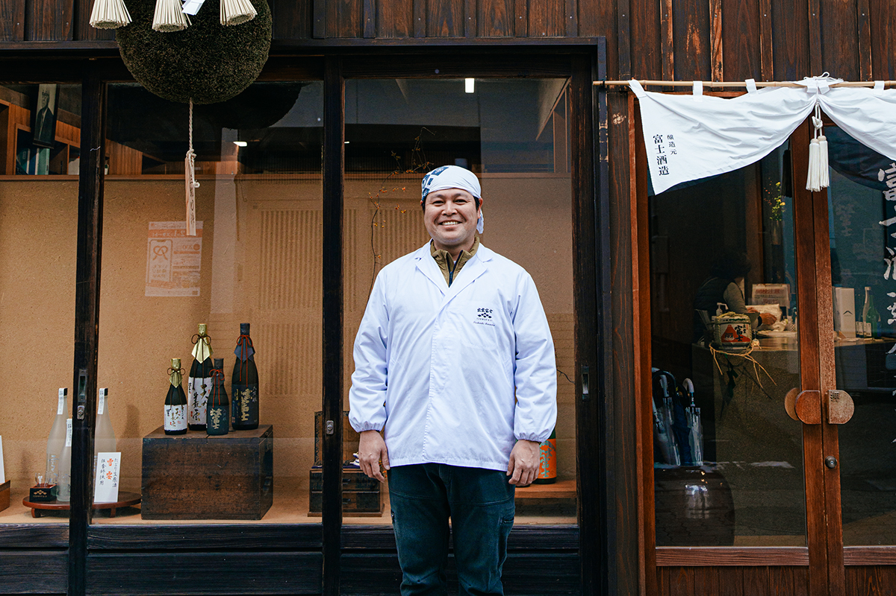
«Фудзи сюдзо»
- Адрес
- префектура Симанэ, Идзумо, Имаити-тё, 1403
- Телефон
- +81 853-21-1510
- Часы работы
- 9:00–17:00
- Выходные
- суббота, воскресенье, праздники
- Сайт
- izumofuji.com
Ясуги
«Ёсида сюдзо»: триста лет и свежий вкус
Город Ясуги стоит на востоке префектуры, у границы с Тоттори. Пивоварня «Ёсида сюдзо» появилась здесь в 1743 году с разрешения князя местного княжества Хиросэ и варит сакэ уже почти 300 лет. Ей руководит пятое поколение семьи.
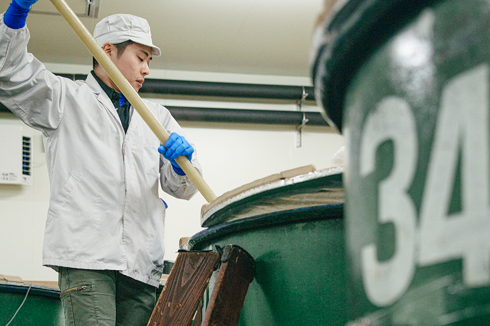
Здешняя марка «Гассан» славится ароматом и чистым, чётким вкусом. Чтобы сакэ всегда казалось только что отжатым, пивоварня строго следит за температурой при пастеризации и придумала для этого собственное оборудование. «Гассан» считают одним из лучших сакэ Идзумо, и многие в Японии и за рубежом начинают знакомство с сакэ именно с него.
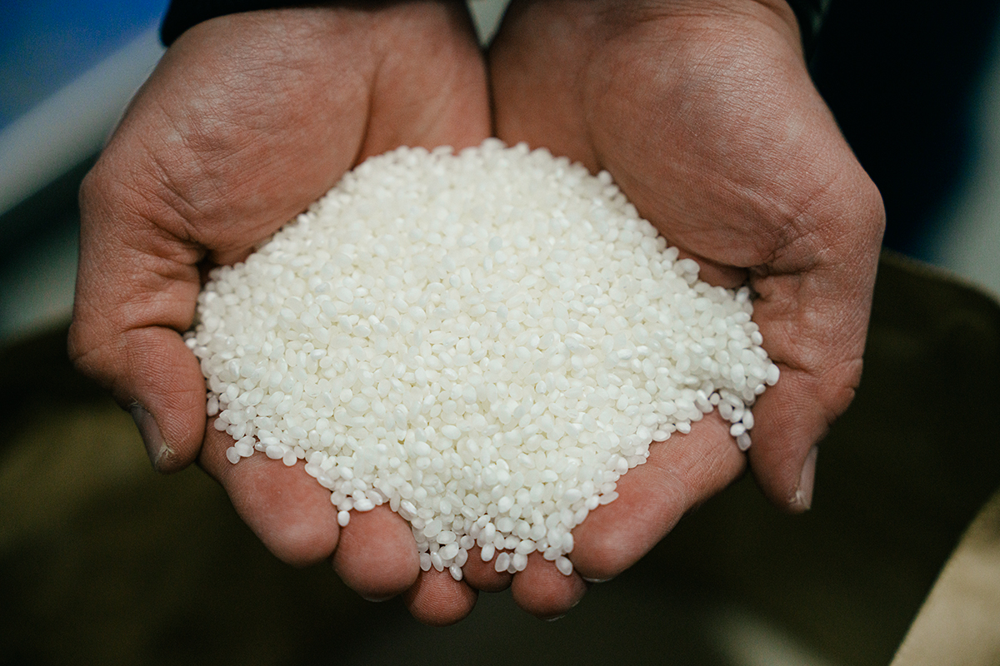
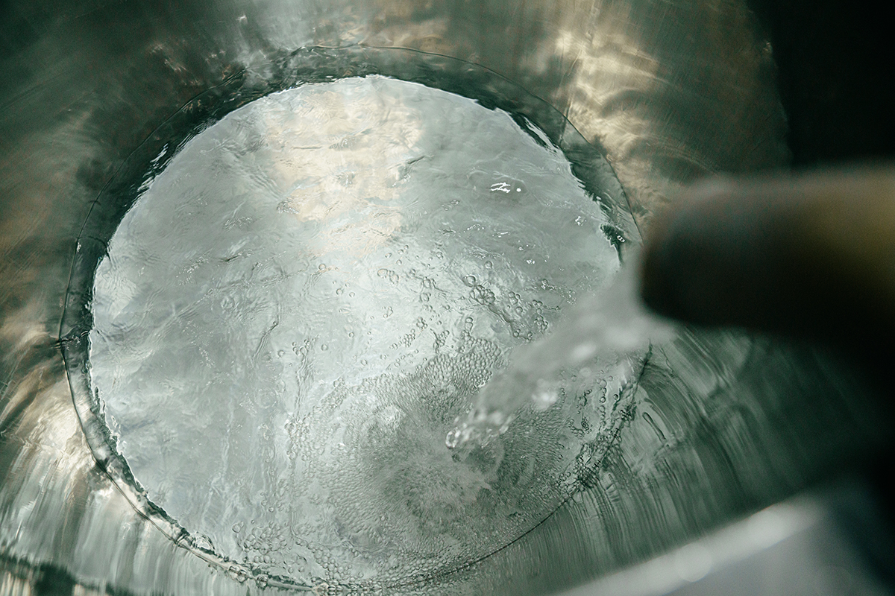
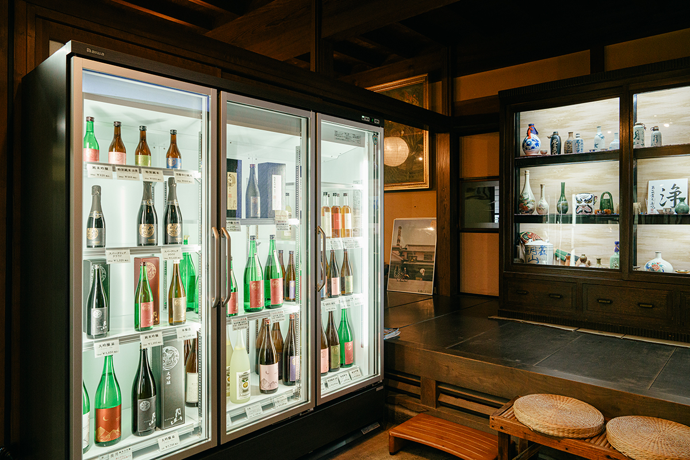
«Ёсида сюдзо»
- Адрес
- префектура Симанэ, Ясуги, Хиросэ-тё Хиросэ, 1216
- Телефон
- +81 854-32-2258
- Часы работы
- 8:30–12:00, 13:00–17:00
- Выходные
- суббота, воскресенье, праздники
- Сайт
- e-gassan.co.jp
Осень
«Итакура сюдзо» и сакэ хияороси
Осенью японские пивоварни выпускают особое сакэ: хияороси. Это сакэ, сваренное зимой, которое один раз пастеризуют и оставляют дозревать до осени. Потом его разливают по бутылкам прямо из ёмкости, без второго нагрева. Обычно сакэ пастеризуют дважды, после отжима и при розливе, а хияороси только один раз, поэтому его относят к «намадзумэ».
Сейчас многие пивоварни выдерживают такое сакэ в холодильнике, и хияороси или «акиагари» называют вообще осеннее сакэ, которое иногда появляется в продаже уже в августе. За лето сакэ успевает созреть, поэтому оно мягче и спокойнее молодого. Хияороси чаще всего пьют комнатной температуры или подогретым, и оно хорошо идёт к осенней еде: сайре и грибам.
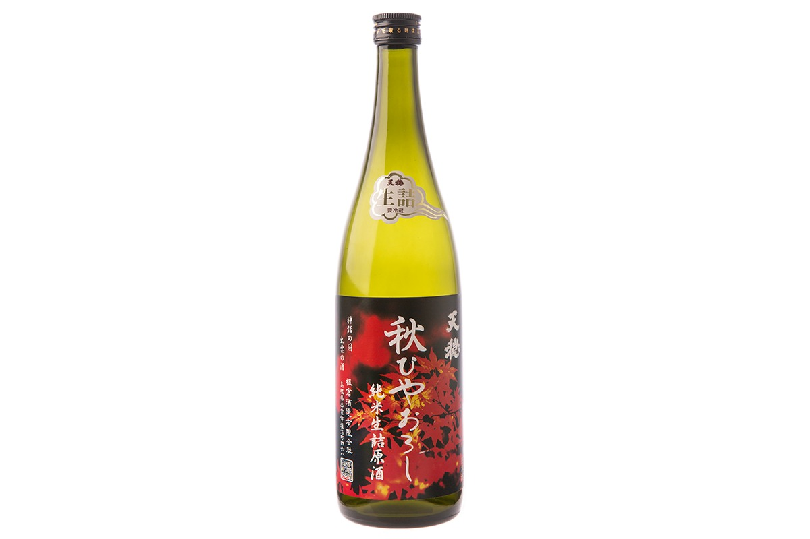
Пивоварне «Итакура сюдзо» в Идзумо в 2020 году исполнилось 150 лет. Название её марки «Тэнон» взято из буддийского изречения школы Нитирэн: «Если небо спокойно, нужды не будет». Вкус у сакэ и правда спокойный, оно не надоедает, и его особенно ценят те, кто любит пить сакэ подогретым. Рис почти весь местный, из Оку-Идзумо: Гохякумангоку, Сака-нисики, Каирё-Омати. Сакэ варят по методу мастеров Идзумо «санъин гиндзё-дзукури»: например, кодзи выращивают три дня, а не два, как обычно, чтобы плесень проросла до самой середины зерна.
Осеннее хияороси у «Тэнон» самое плотное в линейке. Для него каждый год отбирают лучшее сакэ из риса Гохякумангоку и долго выдерживают, отчего вкус становится ещё глубже и мягче. Сначала его стоит попробовать комнатной температуры, а потом подогреть: от горячего до остывшего сакэ меняет характер при каждой температуре. Бутылка 720 мл стоила 1485 иен в 2020 году.
«Тэнон аки хияороси дзюммай намадзумэ гэнсю»
- Цены / Вход
- 1485 иен за 720 мл
Мацуэ
Говядина «Симанэ вагю» в «Рондзин»
К сакэ в Симанэ стоит попробовать «Симанэ вагю», местную говядину японской чёрной породы. На общенациональном конкурсе вагю, который называют олимпиадой японской говядины, она дважды получала высшую награду, приз премьер-министра. Название «Симанэ вагю» носит только мясо, прошедшее строгий отбор по качеству.
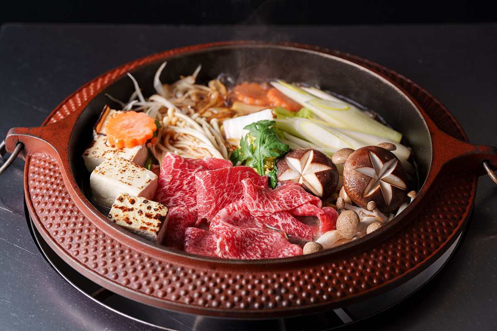
Ресторан «Рондзин» стоит у рва замка Мацуэ, одного из немногих японских замков со статусом национального сокровища. Он открылся в 1969 году, и зал с духом эпохи Тайсё (1912–1926) выглядит почти как музей. Здесь подают говядину «Симанэ вагю» высших категорий A4 и A5, а повар ещё раз отбирает лучшие куски.
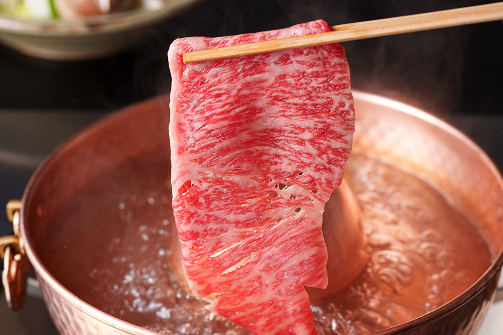
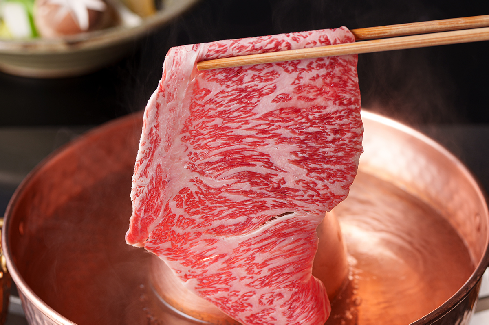
Главное блюдо ресторана с первого дня работы это сябу-сябу. Тонкий ломтик с мраморными прожилками тает во рту, жир сладкий, вкус глубокий и без тяжести. Соус с кунжутом и соус понзу придумала первая хозяйка ресторана, и рецепты хранят до сих пор. Кроме японских блюд, в меню много европейских.
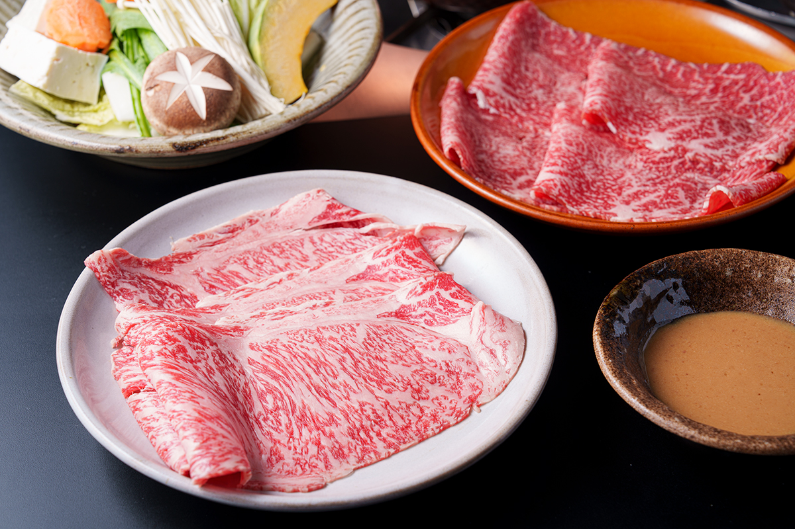
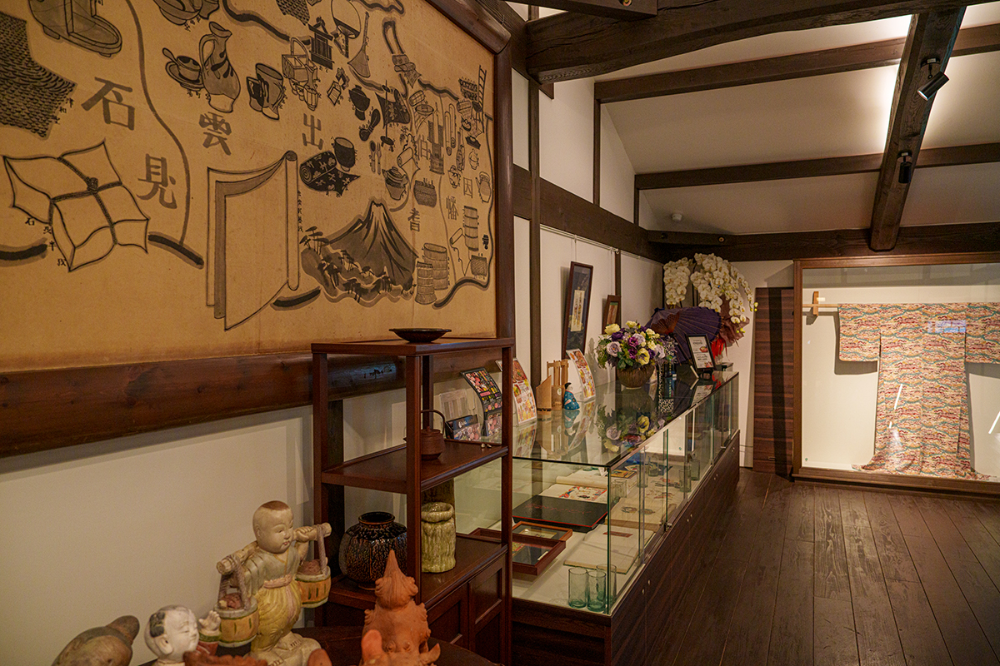
«Рондзин», главный ресторан в Мацуэ
- Адрес
- префектура Симанэ, Мацуэ, Тономати, 267
- Телефон
- +81 852-22-3618
- Часы работы
- 11:00–15:00 (последний заказ 14:30), 17:00–21:00 (последний заказ 20:30)
- Выходные
- вторник (если вторник праздник, обычно на следующий день, уточняйте)
- Сайт
- ronjin.co.jp
Онсэн
«Сагиною-со» рядом с музеем Адати
Рёкан «Сагиною-со» стоит в Ясуги, в минуте ходьбы от музея Адати, чей сад считают лучшим в Японии. Здесь бьёт источник онсэна Сагиною. По легенде, 1300 лет назад в нём лечила раны белая цапля. Позже этот источник был купальней местных князей. Вода радоновая, и её издавна считают целебной.
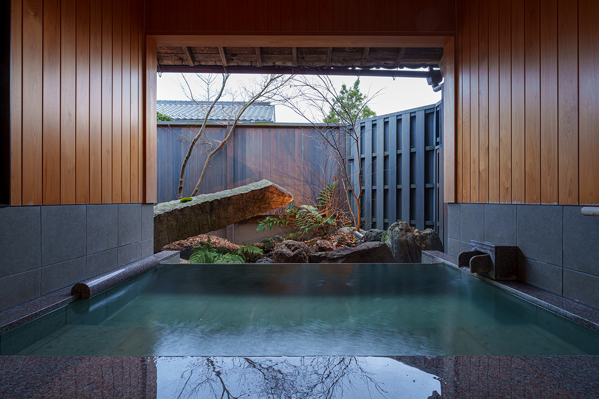
В рёкане 19 номеров разных типов: есть особые номера с собственной открытой купальней и отдельные домики. Вечером подают ужин кайсэки целиком из «Симанэ вагю»: стейк, слегка обожжённые суши, говядину, тушённую в мисо, и рис, сваренный в горшочке.
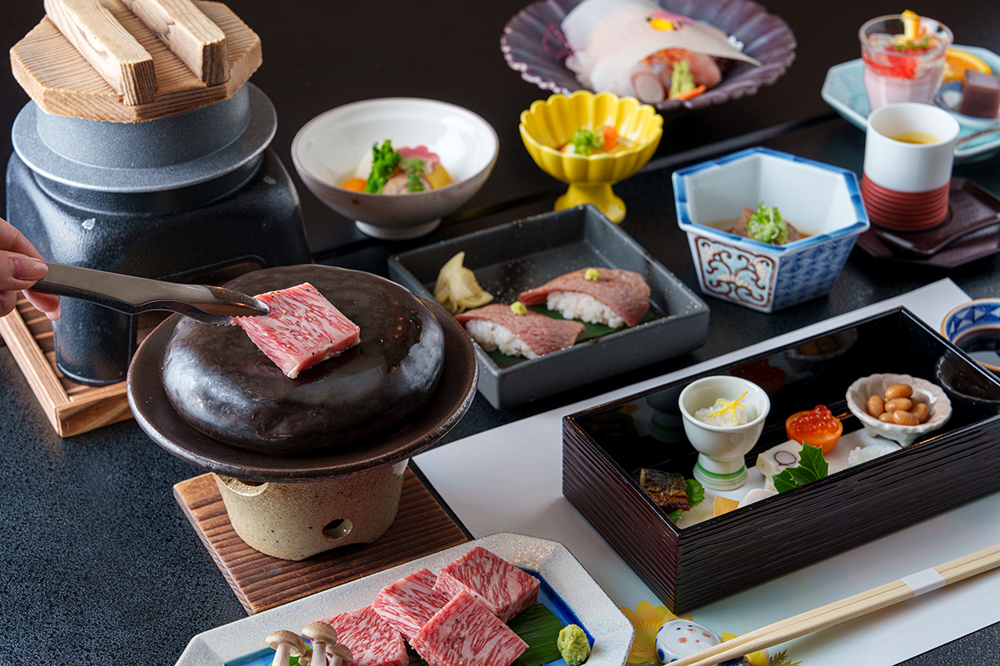
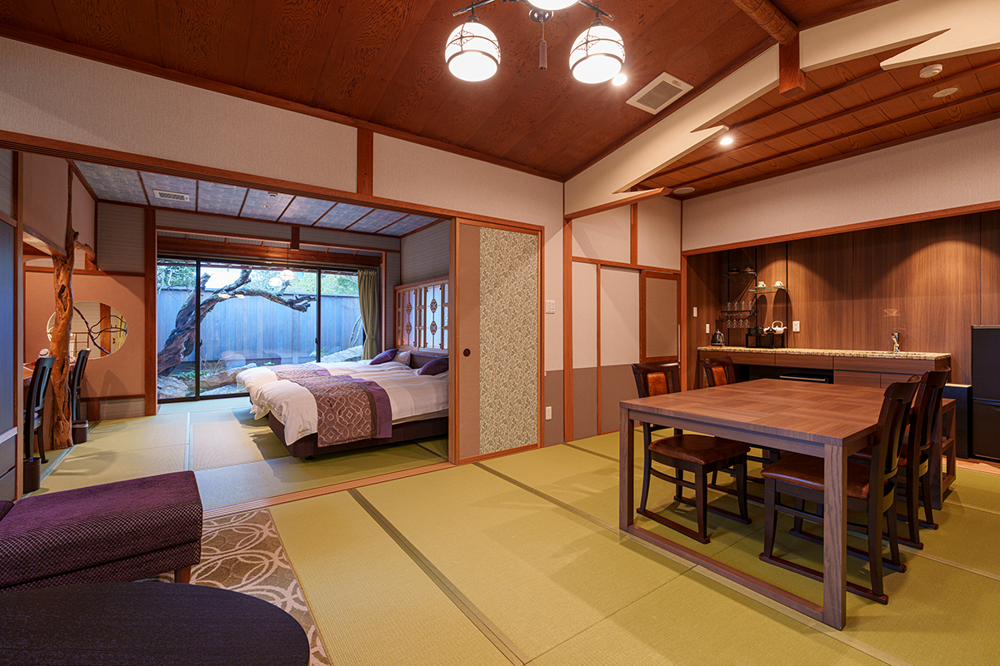
В 2025 году номер в «Сагиною-со» стоил от 29 150 иен за ночь, с налогом и сервисным сбором.
«Сагиною-со»
- Адрес
- префектура Симанэ, Ясуги, Фурукава-тё, 478-1
- Телефон
- +81 854-28-6211
- Цены / Вход
- от 29 150 иен за номер в сутки, с налогом и сервисным сбором
- Сайт
- saginoyusou.com
Озеро Синдзи
«Минамикан»: рёкан писателей
Мацуэ называют городом воды, и его символ это озеро Синдзи. На самом берегу стоит рёкан «Минамикан», открытый в 1888 году. Здесь останавливались писатели и художники, среди них Тосон Симадзаки (1872–1943), один из создателей нового японского романа, и Рюноскэ Акутагава (1892–1927), автор «Расёмона».
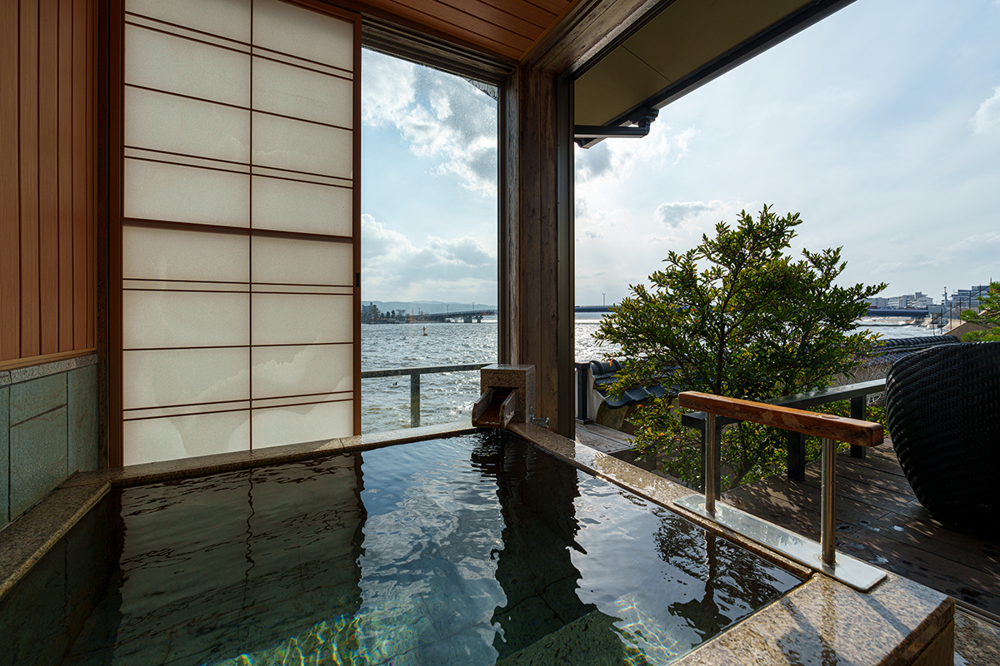
Озеро меняется каждую минуту, а у воды раскинулся сухой сад камней, где растёт дерево возрастом 300 лет. Номера выходят либо на озеро, либо в сад, и все обставлены по-разному. Вечером из номера с купальней смотрят на закат над Синдзи, а за ужином подают сезонные продукты края.
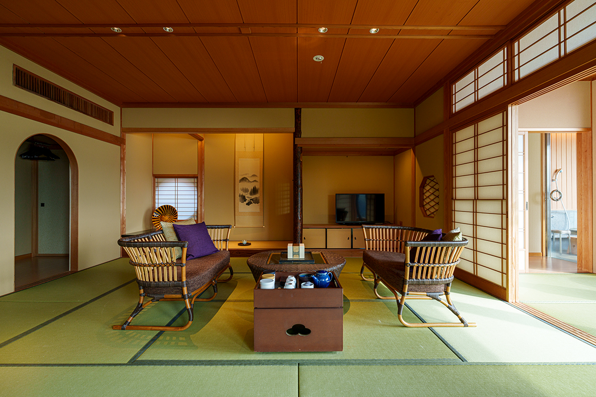
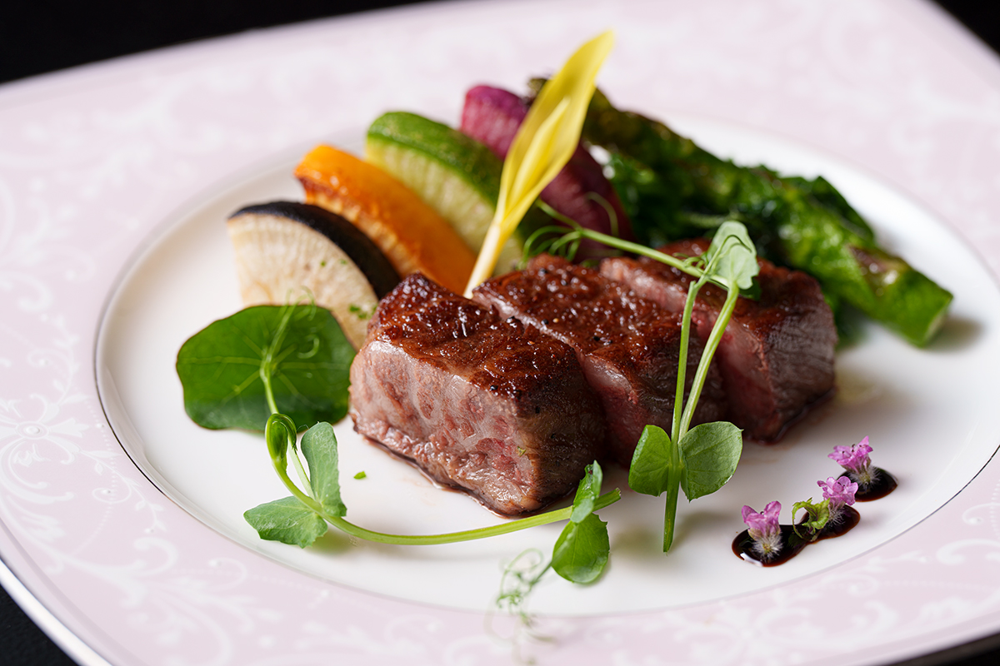
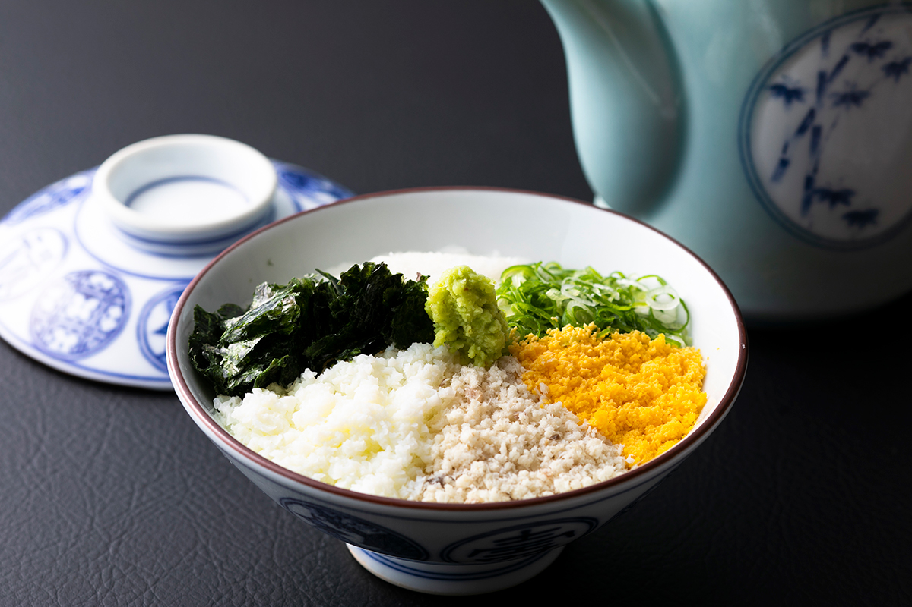
В 2025 году номер в «Минамикан» стоил от 33 150 иен за ночь, с налогом и сервисным сбором.
«Минамикан»
- Адрес
- префектура Симанэ, Мацуэ, Суэцугу-хонмати, 14
- Телефон
- +81 852-21-5131
- Цены / Вход
- от 33 150 иен за номер в сутки, с налогом и сервисным сбором, уточняйте при бронировании
Дорога
Как добраться
Из Осаки быстрее всего лететь: от аэропорта Итами до аэропорта Идзумо Энмусуби около 55 минут. Поездом едут от станции Син-Осака на синкансэне до Окаямы, а там пересаживаются на экспресс «Якумо» до Мацуэ, всего около 3 часов 25 минут без учёта пересадки. Из Токио самолёт летит от аэропорта Ханэда до Идзумо около 85 минут.
Фото: Ацуси Ямахира, Кадзуя Хаяси.